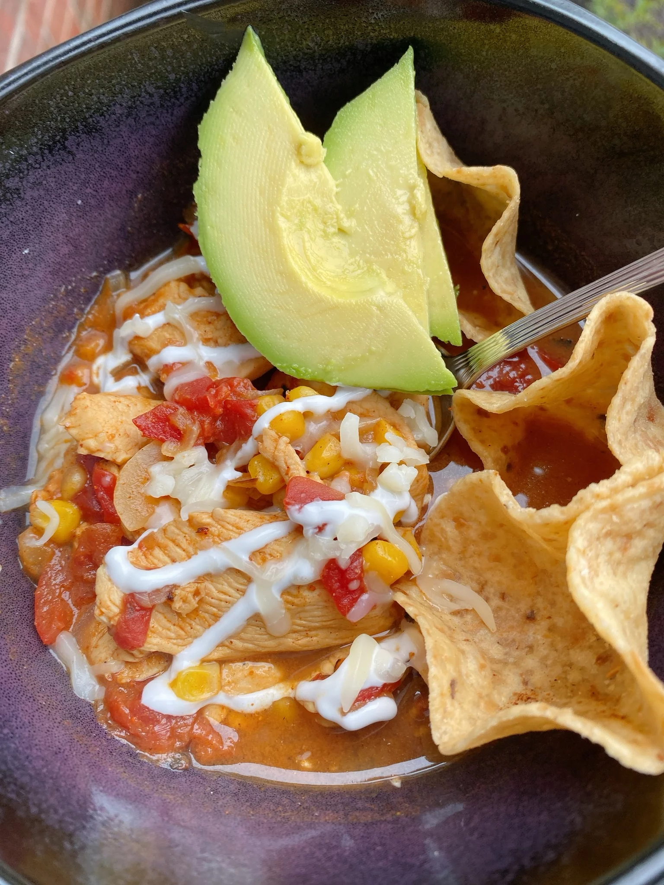

Chicken Taco Soup

Description
This cozy soup will be ready in less than 15 minutes. You can make it even quicker by using rotisserie chicken.
Ingredients
-
2 teaspoons olive oil
-
¼ cup chopped onion
-
¼ cup chopped onion
-
3 tablespoons taco seasoning, divided
-
½ (14 ounce) can fire-roasted diced tomatoes, with juice
-
1 cup chicken broth
-
⅓ cup frozen corn
-
1 (5 ounce) boneless, skinless chicken breast, thinly sliced on the diagonal
-
½ cup tortilla chips
-
½ avocado, sliced
-
¼ cup shredded Oaxaca cheese, or to taste
-
2 tablespoons sour cream, or to taste
Steps
-
Heat oil in a heavy saucepan over medium-high heat until shimmering. Add onion and 1 1/2 tablespoons taco seasoning. Cook until onions are soft and translucent, 3 to 4 minutes. Stir in tomatoes with juice, chicken broth, and corn.
-
Sprinkle remaining taco seasoning over chicken pieces and add to soup. Stir to combine, cover, and cook until chicken is cooked through, about 5 minutes. Serve with tortilla chips, avocado slices, Oaxaca cheese, and sour cream.